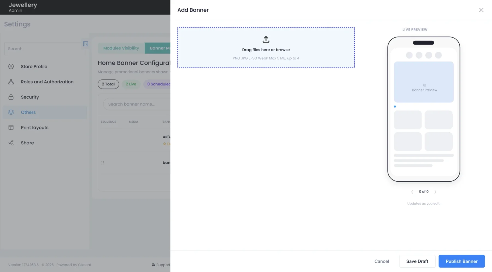
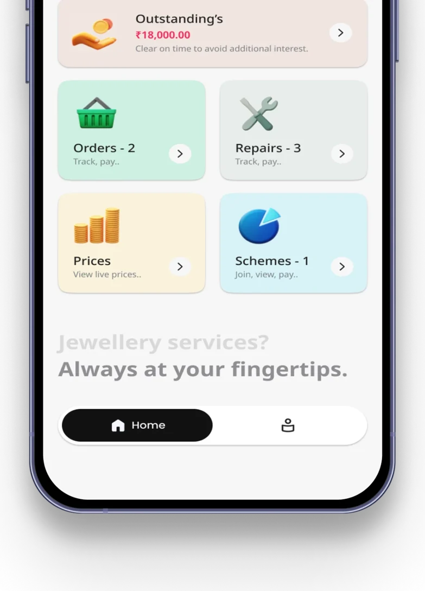

Upload, with a live preview
The Add Banner panel opens beside the banner list. Drop in files on the left; a phone preview on the right shows how the banner will look in the app, and updates as you edit.

Case study · Jewellery retail ERP
Store admins publish their own marketing banners from the ERP to the My Jeweller customer app, with no deployment in between.


The jewellery retail ERP connects to the My Jeweller customer app. When a store admin uploads a marketing banner in the ERP, it shows to customers in the app.
Before every festive sale, a new banner had to be deployed to the My Jeweller app by the dev team from the backend, for every store. It was a pain point for the dev team, and clients waited days for one banner.
Store admins had no option of their own to put up or change a banner, so an offer could not go live when the store needed it.
The feature moves work from the dev team to the store admin, so the flow had to be simple enough to run without help. I took it through the same steps as every feature I design.
Requirement sessions with the PM and stakeholders.
Turned business rules into user flows and information architecture.
Agreed structure and content before visual design.
Reviewed prototypes with the PM and stakeholders.
Final screens in Figma, built with reusable components.
Specs, states and edge cases in Jira; validated with QA in UAT.
Settings → My Jeweller App → Banner Management, in the ERP.
Drag in up to 4 images: PNG, JPG, JPEG or WebP, up to 5 MB.
Permanent, or scheduled with start and end date and time, plus slide duration.
A live phone preview updates as the admin edits.
Save as draft or publish; it shows in the My Jeweller app.
The Add Banner panel opens beside the banner list. Drop in files on the left; a phone preview on the right shows how the banner will look in the app, and updates as you edit.

Choose how long a banner runs. Permanent banners stay up; scheduled ones get a start and end date and time, which suits festive offers. Slide duration, banner name and display text sit right below.

The Banner Audit Log lists each change with date and time, banner name, action, who changed it, and the old and new status. Filter by date range, action type and user.

The admin works in the web ERP; customers see the result in the My Jeweller mobile app.

A phone preview sits next to the upload fields and updates as the admin edits, so they see the banner as customers will.
Festive offers get a start and end date and time, so a banner goes up and comes down on its own.
Admins can save a draft and publish only when it is ready.
The audit log shows who changed what and when, with the old and new status, filterable by date, action and user.
Screens were handed off with every state, then validated with QA in UAT.
See the full project